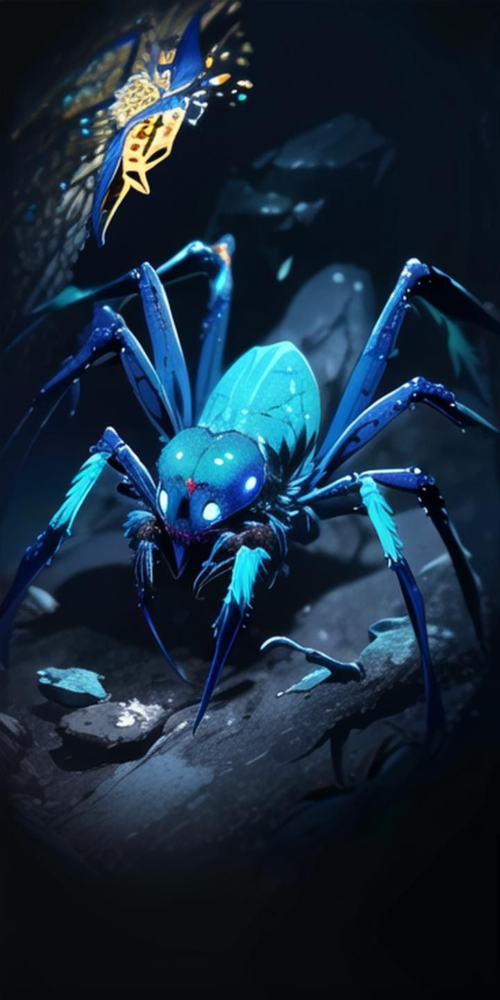

Laplace
Summary:
Laplace's theory is a simple one: given perfect information, he thinks he can predict the future in its totality. With that power, he will rule the universe from the shadows, with the power to kill a king by knocking a roof tile loose three days before he walks under it. Laplace's theory has merits - his followers can harness his magic to see a few seconds into the future, and Laplace himself masterminds schemes for events years in the future. His power is almost perfect.
Almost.
Laplace's one weakness is virtue - his visions of the future cannot comprehend selflessness or sacrifice. Many of his best-laid plans have been foiled at the last second by a simple act of kindness. But then, Laplace doesn't view this as much of a problem. If virtue is the one thing stopping him from ruling the world, there's a simple solution, isn't there? Eradicate every trace of goodwill in the world, and his dominion of it will surely follow.
Powers:
- Foresight of the future, usually in small bursts for his less-powerful followers.
- Abilities centered around traps and snares - with a focus on webs.
- Strong mental powers, centered around gaining and retaining information.
Weaknesses:
- Virtue, as noted - his powers only work when everyone involved is selfish.
- Foresight can't look everywhere at once - if you look at yourself, you'll see someone ambushing you in the future, but not someone sneaking by you.
- His foresight tends not to work on other viziers, as they encompass too many things to process at once. Still, that's just a hardware problem - if he had more power, he could predict the workings of gods.
Followers:
- His Kren'la have blueish skin and anywhere from four to six eyes. Some among them can see a second or two into the future.
- His most devoted followers can ascend, gaining six extra spider-like limbs and greater magical power. Of course, Laplace only lets people ascend when he thinks he can control them...
Misconceptions:
- Many of the rich and powerful think Laplace to be one of the "agreeable" viziers, because he's willing to negotiate with them. This is foolhardy - if you're the sort of person he doesn't think is worth killing, you're already his pawn.